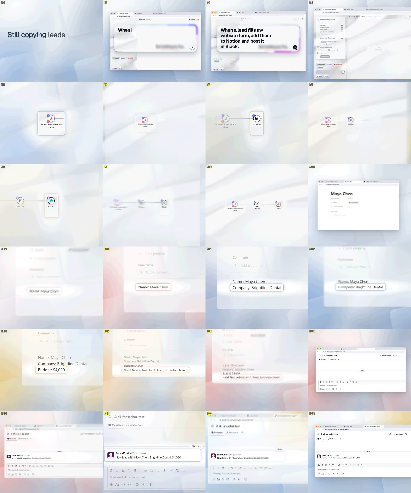
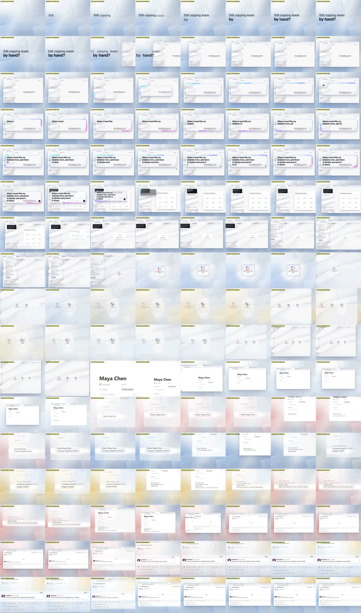

Threshold: -24.2 LUFS
Loudness range:
LRA: 2.4 LU
Threshold: -34.9 LUFS
LRA low: -16.0 LUFS
LRA high: -13.6 LUFS
True peak:
Peak: -1.4 dBFS
[out#0/null @ 0x586223e06ec0] video:138KiB audio:2128KiB subtitle:0KiB other streams:0KiB global headers:0KiB muxing overhead: unknown
frame= 340 fps=0.0 q=-0.0 Lsize=N/A time=00:00:11.33 bitrate=N/A speed=24.1x elapsed=0:00:00.47